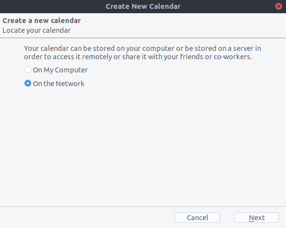

Sincronizando com Thunderbird
Thunderbird é um cliente de e-mail maduro e rico em recursos que pode ser transformado em um gerenciador de informações pessoais (PIM) completo. Desde a versão 102, ele oferece suporte à sincronização do catálogo de endereços via CardDAV e descoberta automática de calendários e catálogos de endereços disponíveis no servidor.
Método recomendado
Since Thunderbird 102, the CardDAV & CalDAV protocols are natively supported.
Contacts
On the address book view, click the down arrow near New Address Book and choose Add CardDAV Address Book.
In the next window, type your Username and Location (Server URL).
A próxima janela solicitará seu nome de usuário e senha para esta conta.
A janela anterior será atualizada e perguntará quais catálogos de endereços você deseja sincronizar.
Escolha e clique em Continuar.
Se você quiser adicionar um novo catálogo de endereços posteriormente, poderá refazer todas essas etapas e apenas os catálogos ainda não sincronizados serão sugeridos.
Calendars
Go to the calendar view in Thunderbird and select the New Calendar… button at the bottom of the left side panel.
Choose On the network:
Type your Username and Location (Server URL), then click on Find Calendars.
Choose which calendars you want to add and click Subscribe
A mesma coisa aqui, se posteriormente você quiser adicionar mais calendários, basta refazer o procedimento.
Alternativa: Usando o complemento TbSync
Para este método, você precisa ter dois complementos instalados:
When they are installed, go to Extras/Synchronization settings (TbSync) if you are on Windows, or Edit/Synchronization settings (TbSync) if on Linux, then:
In the account manager choose Add new account > CalDAV & CardDAV
In the next window, go with the default called Automatic Configuration and click Next
Enter an Account name (which you can freely choose), a User name, a Password, the Server URL, and click Next
Na próxima janela, o TbSync deve ter descoberto automaticamente os endereços CalDAV e CardDAV. Quando terminar, clique em Concluir
Marque a caixa Ativar e sincronizar esta conta. O TbSync agora descobrirá todos os catálogos de endereços e calendários aos quais sua conta tem acesso no servidor
Marque a caixa ao lado de cada calendário e catálogo de endereços que deseja sincronizar, defina com que frequência deseja que eles sejam sincronizados e pressione o botão sincronizar agora
Depois que a primeira sincronização bem-sucedida for concluída, você poderá fechar a janela.
Doravante, o TbSync fará o trabalho para você. Você concluiu a configuração básica e pode pular as próximas seções, a menos que precise de um catálogo de endereços mais avançado.
Alternativa: usando o complemento CardBook (somente contatos)
CardBook <https://addons.thunderbird.net/en/thunderbird/addon/cardbook/> _ é uma alternativa avançada ao livro de endereços do Thunderbird, que suporta CardDAV. Você pode ter o TbSync e o CardBook instalados em paralelo.
Clique no ícone CardBook no canto superior direito do Thunderbird:

No CardBook:
Vá para Catálogo de endereços > Novo catálogo de endereços Remoto > Avançar
Selecione CardDAV, preencha o endereço do seu servidor Nextcloud, seu nome de usuário e senha

Clique em “Validar”, clique em Avançar, escolha o nome do catálogo de endereços e clique em Avançar novamente:

When you are finished, CardBook synchronizes your address books. You can always trigger a synchronization manually by clicking “Synchronize” in the top left corner of CardBook: